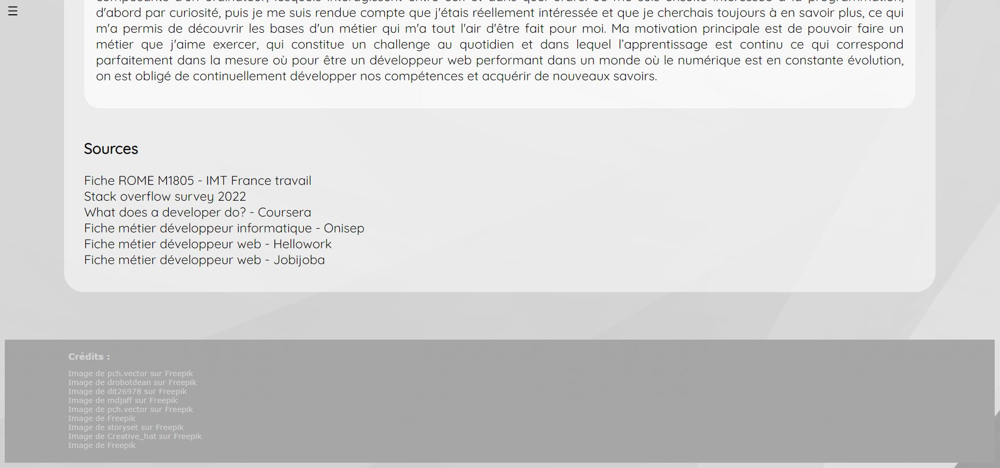
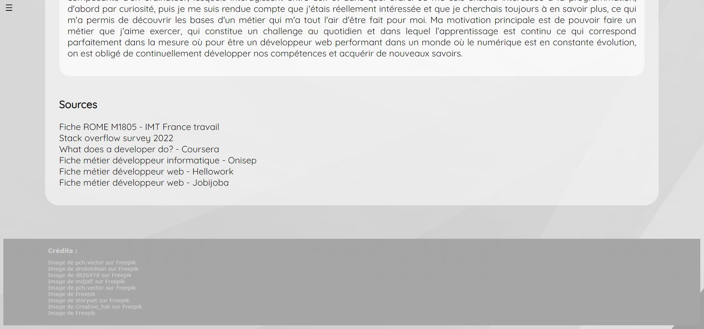

Vous recherchez un développeur front-end disposant d'une expérience significative de 3 semaines en développement HTML et CSS? Alors vous êtes au bon endroit!
À PROPOS
Je m'appelle Sarah, j'ai 23 ans et je suis actuellement en reconversion professionnelle dans le but de devenir développeur web. Avant de me lancer dans ce projet, j'ai exercé le métier de téléconseillere pendant 3 ans au sein de plusieurs services clients. J'y ai développé mes capacités d'écoute et d'analyse ainsi que mon sens de la communication. Ayant toujours été intéressée par le secteur de l'informatique et étant aujourd'hui passionnée par le développement web, je souhaite désormais faire un métier qui me plaît et me pousse à me dépasser au quotidien.
Design
Allier esthétique et performance
<developpement>
Un projet sur-mesure répondant à vos besoins
Ergonomie
Faire de l'expérience utilisateur une priorité
 
